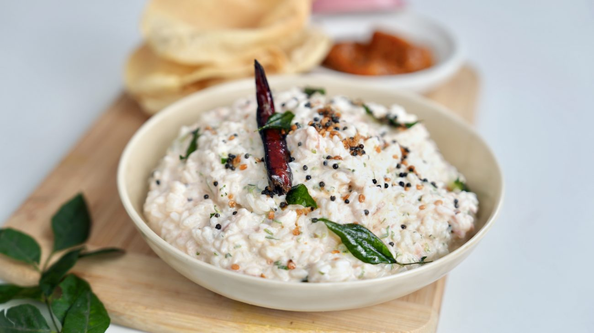

Curd rice

Description
Recipe for curd rice!
Ingredients
- 1 cup cooked rice
- 1 cup plain yogurt (curd)
- 0.25 cup milk
- 1 tablespoon ghee (clarified butter)
- 1 teaspoon mustard seeds
- 1-2 green chilies, finely chopped
- 1 teaspoon grated ginger
- 1 sprig curry leaves
- 2 tablespoons chopped coriander leaves
- Salt to taste
Steps
- Boil the rice and cool it to the room temperature.
- In a mixing bowl, combine the cooked rice, plain yogurt, and milk. Mix well until the rice is evenly coated.
- Heat ghee in a small pan over medium heat.
- Add mustard seeds to the hot ghee and check out for seeds to be poped.
- Add finely chopped green chilies, grated ginger, and curry leaves to the pan. Saute for a few seconds.
- Pour the tempered mixture over the rice and yogurt mixture. Mix well.
- Add salt to taste.
- Garnish with chopped coriander leaves and prefer serving chilled.
Home